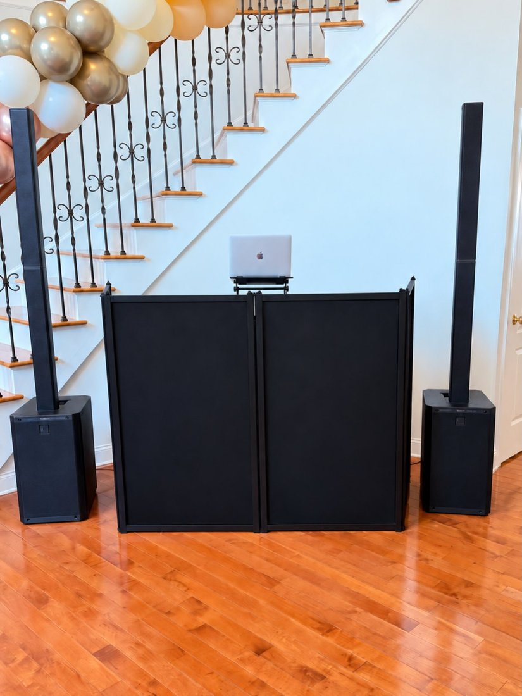
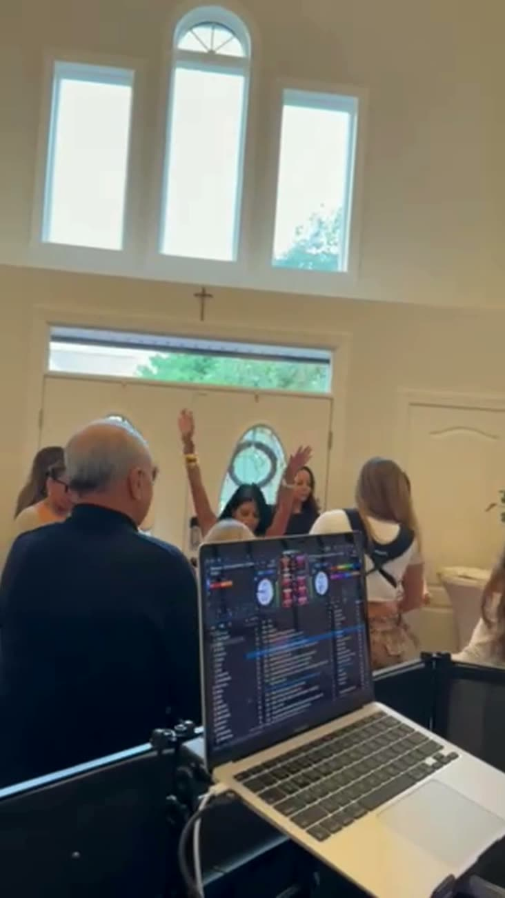

Not every great party happens in a ballroom. This one happened in a foyer, with the booth tucked under a grand staircase, a balloon garland climbing the railing and a houseful of family and friends celebrating a brand-new home. It turned out to be one of my favorite afternoons of the season.

Every party deserves a DJ
People usually think of a DJ for weddings and sweet sixteens. But the parties that surprise everyone are the "smaller" ones: housewarmings, milestone birthdays, showers, backyard get-togethers. With a phone on a speaker, guests stand around and talk. With a DJ, you get a party.
That's because the music is only half of it. The other half is timing: knowing when to keep it low while people arrive and catch up, when to raise the energy, and which song gets the first person to put their drink down and dance. A playlist can't do that. Someone watching the room can.
Reading the room
This crowd was ready from the first song. Hands were up right away, one guest kept a light-up hand drum going all afternoon, and the floor never emptied. My job was to keep that going, mixing live and moving from feel-good house to throwbacks to the songs everyone sings along to, without ever letting the energy dip.

A home also brings its own challenges compared to a venue. You need a clean setup that fits the space, sound that fills the room without overpowering the conversations in the kitchen, and a booth that looks like it belongs there. We kept the footprint small and the sound big.
See it for yourself
Catch the full reel and more on Instagram and Facebook.
House parties across Monmouth County
Monmouth County is house-party country. Between the colonials in Marlboro and Manalapan, the big open foyers in Holmdel and Colts Neck, and the backyards from Freehold to Middletown, a lot of the best celebrations around here happen at home. Housewarmings, milestone birthdays, graduation parties, communions and holiday get-togethers all deserve the same energy you'd expect at a venue.
We're based in Central Jersey, so Monmouth County homes are right in our backyard, from Red Bank and Long Branch to Asbury Park and Howell. No extra travel fees to worry about, and we know how to fit a clean, professional setup into a living room, foyer or patio. See more on our Monmouth County DJ page.
In their words
The best part of any party is hearing from the hosts afterward. Here's what they left us on Instagram:
"The best and most loving DJ! Brought amazing music and vibes to our beautiful new home 🤍✨🏡" The homeowners, via @belloentertainmentnj
Congratulations again on the new home, and thank you for having us christen it. Best crowd we could have asked for.